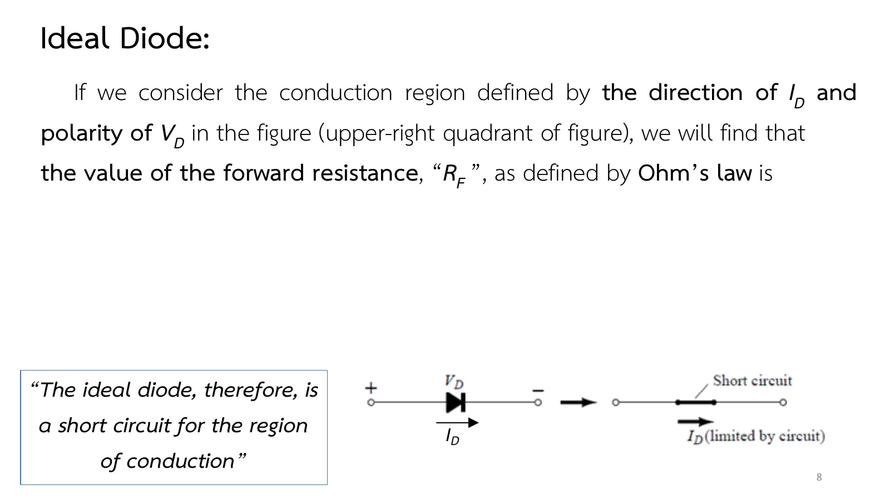
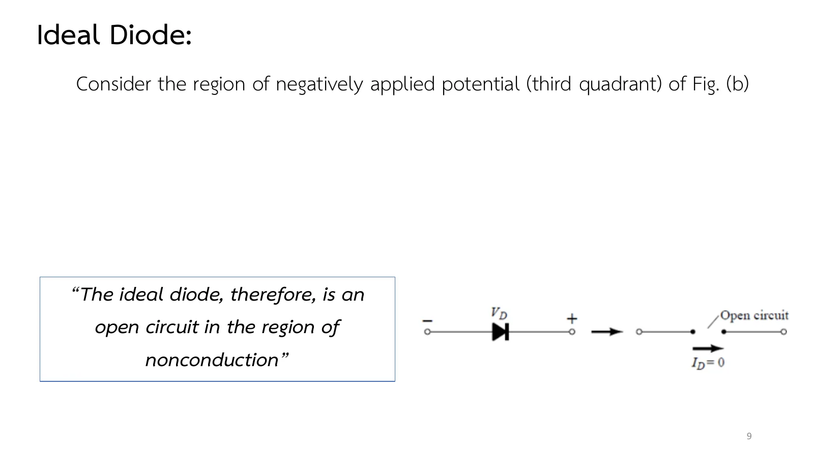

ไดโอดอุดมคติ: สวิตช์ที่นำกระแสได้ทางเดียว The ideal diode: a one-way switch
The ideal diode A switch that conducts in one direction only
สวิตช์ไฟในบ้านต้องมีคนกด แต่ไดโอดเปิดและปิดได้เอง: ยอมให้กระแสผ่านเมื่อกระแสไหลไปทางหนึ่ง และกั้นทันทีเมื่อวงจรพยายามดันกระแสกลับ สวิตช์ทางเดียวนี้คืออุปกรณ์สารกึ่งตัวนำที่ง่ายที่สุด แต่อยู่ในแทบทุกระบบ เช่นวงจรเรียงกระแสที่เปลี่ยนไฟสลับเป็นไฟตรงในบทที่ 2 หน้านี้เปิดบทที่ 1 ด้วยเรื่องสั้น ๆ ว่าอุปกรณ์สารกึ่งตัวนำมาจากไหน แล้วทำความรู้จักไดโอดอุดมคติ (ideal diode) ผ่านคำถามเดียว: ตอนนี้มันเป็นลัดวงจร (short circuit) หรือเปิดวงจร (open circuit) ทดลองในวงจรอนุกรม (ส่วน A) แล้วตอบโจทย์ข้อ 1 และแบบฝึกเพิ่ม (สไลด์บทที่ 1 หน้า 2–11 · Boylestad หัวข้อ 1.1 และ 1.7)
A light switch needs someone to press it; a diode switches by itself. It lets current through when the current flows one way and blocks it the moment the circuit tries to push it back. This one-way switch is the simplest semiconductor device, yet it sits in almost every system, such as the rectifiers of chapter 2 that turn ac into dc. This page opens chapter 1 with a short story of where semiconductor devices came from, then meets the ideal diode through a single question: is it a short circuit or an open circuit right now? Try it in a series circuit (section A), then problem 1 and more practice (chapter 1 slides, pp. 2–11; Boylestad sections 1.1 and 1.7).
ประเด็นสำคัญของหน้านี้
- ไดโอดมีสองขั้ว: แอโนด (anode) อยู่ด้านฐานของสามเหลี่ยม และแคโทด (cathode) อยู่ด้านขีดตั้งที่หัวลูกศรชี้ไปหา ทิศ \(I_D\) และขั้ว \(V_D\) ที่นิยามไว้ (สไลด์หน้า 7) ทำให้บริเวณนำกระแสอยู่ในจตุภาคที่ 1 ของกราฟลักษณะสมบัติ
- นำกระแส = ลัดวงจร: ถ้ากระแสที่วงจรสร้างไหลทางเดียวกับหัวลูกศร ไดโอดอุดมคติมี \(V_D = 0\) และ \(R_F = 0\ \Omega\) ขนาดกระแสถูกกำหนดโดยวงจรรอบนอก ไม่ใช่โดยไดโอด (สไลด์หน้า 8)
- ไม่นำกระแส = เปิดวงจร: ถ้าวงจรพยายามดันกระแสสวนหัวลูกศร \(I_D = 0\) และ \(R_R \to \infty\) แรงดันคร่อมไดโอดถูกกำหนดโดยวงจรรอบนอก และอาจสูงเท่าแรงดันของแหล่งจ่ายทั้งหมด (สไลด์หน้า 9)
- ต่างจากสวิตช์ธรรมดาตรงไหน: สวิตช์ที่ปิดอยู่ให้กระแสไหลได้ทั้งสองทาง ไดโอดที่นำกระแสให้ไหลได้ทางเดียว และ "ปิดหรือเปิด" เองตามทิศของกระแสที่วงจรพยายามสร้าง (สไลด์หน้า 10–11)
Key points of this page
- A diode has two terminals: the anode at the base of the triangle and the cathode at the bar the arrowhead points to. With the defined direction of \(I_D\) and polarity of \(V_D\) (slide p. 7), the conduction region is the first quadrant of the characteristic.
- Conducting = a short: when the current set up by the circuit follows the arrowhead, an ideal diode has \(V_D = 0\) and \(R_F = 0\ \Omega\). The size of the current is set by the rest of the circuit, not by the diode (slide p. 8).
- Not conducting = an open circuit: when the circuit tries to push current against the arrowhead, \(I_D = 0\) and \(R_R \to \infty\). The voltage across the diode is set by the rest of the circuit and can be as large as the whole source voltage (slide p. 9).
- How it differs from a plain switch: a closed switch passes current both ways; a conducting diode passes it one way only, and it "closes or opens" by itself according to the direction of the current the circuit tries to set up (slides pp. 10–11).
ทรานซิสเตอร์ตัวแรก และคำถามว่าย่อได้อีกแค่ไหน
The first transistor, and how small things can get
สไลด์หน้า 5 พาย้อนไปวันที่ 23 ธันวาคม 1947 ที่ Bell Labs: John Bardeen, William Shockley และ Walter Brattain เปิดตัวทรานซิสเตอร์ตัวแรก ซึ่งเป็นแบบจุดสัมผัส (point-contact) แบบจำลองของมันอยู่ใต้ครอบแก้วในภาพ ปีถัดมาจึงเกิดทรานซิสเตอร์แบบรอยต่อคู่ (bipolar junction transistor, BJT) ที่จะได้เรียนในบทที่ 3
สไลด์หน้า 6 เล่าต่อว่าหลังจากนั้นทุกอย่างหดลง: วันนี้ระบบทั้งระบบอยู่บนแผ่นเวเฟอร์ที่เล็กกว่าอุปกรณ์ชิ้นเดียวของวงจรยุคก่อนหลายพันเท่า ลูกศรในภาพไล่ให้เห็นเครื่องมือในห้องทดลองที่ปี 1940 เป็นชุดอุปกรณ์ใหญ่โต หดลงทีละขั้นจนปี 2016 เหลือขนาดพกใส่กระเป๋า แล้วจบที่ปี 2017 กับเครื่องหมายคำถาม จะหดได้อีกแค่ไหนขึ้นกับสามปัจจัย: คุณภาพของวัสดุสารกึ่งตัวนำ เทคนิคการออกแบบวงจร และขีดจำกัดของเครื่องจักรที่ใช้ผลิต ปัจจัยแรกคือเรื่องของหน้า 1.2 และ 1.3
Slide p. 5 goes back to 23 December 1947 at Bell Labs, where John Bardeen, William Shockley and Walter Brattain introduced the first transistor, a point-contact device; a replica sits under the glass dome in the photograph. A year later came the bipolar junction transistor (BJT) that you will meet in chapter 3.
Slide p. 6 tells what followed: everything shrank. Complete systems now fit on wafers thousands of times smaller than a single element of earlier circuits. The arrow follows a laboratory instrument from a bulky set-up in 1940, step by step, down to pocket size in 2016, and ends at 2017 with a question mark. How much further it can go depends on three factors: the quality of the semiconductor material, the circuit design technique, and the limits of the manufacturing equipment. The first factor is the subject of pages 1.2 and 1.3.
![Slide 5, Introduction: it is now some 50 years since the first transistor was introduced on December 23, 1947. For those of us who experienced the change from glass envelope tubes to the solid-state device, it still seems like a few short years ago. Photographs: John Bardeen, William Shockley and Walter Brattain at Bell Labs in 1948, and a replica of the first point-contact transistor under a glass dome. They invented the point-contact transistor in 1947 and the bipolar junction transistor in 1948.](slides/ch1/p05.webp)
![Slide 6, Introduction: complete systems now appear on wafers thousands of times smaller than the single element of earlier networks; new designs and systems surface weekly. Miniaturization appears to be limited by three factors: the quality of the semiconductor material itself, the network design technique, and the limits of the manufacturing and processing equipment. A picture shows a laboratory instrument shrinking along an arrow, from a room-sized set-up in 1940 through bench-top units in 1972 and 2005 to hand-held, key-fob and phone add-on sizes in 2008, 2014 and 2016, with 2017 and a question mark at the end.](slides/ch1/p06.webp)
↓ ส่วน 0: เป้าหมายของบทที่ 1 และแผนที่ของหกหน้าในบทนี้
↓ Section 0: the goals of chapter 1 and a map of its six pages
บทนำของบทที่ 1: จากหลอดสุญญากาศสู่สารกึ่งตัวนำ
Chapter 1 introduction: from vacuum tubes to semiconductors
บทที่ 1 มีเป้าหมายตามสไลด์หน้า 2–3: รู้จักวัสดุสารกึ่งตัวนำสามชนิด คือ ซิลิคอน (Si) เจอร์เมเนียม (Ge) และแกลเลียมอาร์เซไนด์ (GaAs) เข้าใจการนำไฟฟ้าด้วยอิเล็กตรอนและโฮล แยกวัสดุชนิด n กับ p ได้ เข้าใจไดโอดเมื่อไม่ได้ไบแอส ไบแอสตรง และไบแอสกลับ คำนวณความต้านทานกระแสตรง กระแสสลับ และกระแสสลับเฉลี่ยจากกราฟได้ และรู้จักวงจรสมมูลของไดโอด สไลด์หน้า 4 แบ่งเนื้อหาเป็นหัวข้อ ซึ่งเว็บนี้จัดเป็นหน้า ดังนี้ ไดโอดอุดมคติ (หน้า 1.1) วัสดุสารกึ่งตัวนำและระดับพลังงาน (หน้า 1.2) วัสดุชนิด n และ p (หน้า 1.3) ไดโอดรอยต่อ p–n (หน้า 1.4) ระดับความต้านทาน (หน้า 1.5) และวงจรสมมูล (หน้า 1.6) ซีเนอร์ไดโอดจะเรียนในบทที่ 2 ส่วนไดโอดเปล่งแสง (light-emitting diode, LED) ที่ระบุในเป้าหมายไม่มีในสไลด์ของวิชา อ่านได้ใน Boylestad หัวข้อ 1.16
Slides pp. 2–3 set the goals of chapter 1: know the three semiconductor materials, silicon (Si), germanium (Ge) and gallium arsenide (GaAs), understand conduction by electrons and holes, tell n- from p-type material, understand the diode with no bias, forward bias and reverse bias, find its dc, ac and average ac resistance from the characteristic, and know its equivalent circuits. Slide p. 4 lists the topics, which this site turns into pages: the ideal diode (page 1.1), semiconductor materials and energy levels (1.2), n- and p-type materials (1.3), the p–n junction diode (1.4), resistance levels (1.5) and equivalent circuits (1.6). The Zener diode comes in chapter 2; the light-emitting diode (LED), named in the goals, is not in the course slides (Boylestad, section 1.16).
ไดโอดอุดมคติมีแค่สองสถานะ
The ideal diode has only two states
สไลด์หน้า 7 วาดสัญลักษณ์ของไดโอดเป็นสามเหลี่ยมชี้ไปที่ขีดตั้ง แล้ววาดกราฟลักษณะสมบัติที่มีเพียงสองเส้น: เส้นสีเขียวตั้งชันไปตามแกนกระแสบวก กับเส้นสีแดงนอนราบไปตามแกนแรงดันลบ ไม่มีส่วนโค้ง ไม่มีค่ากลาง ประโยคในกรอบของสไลด์สรุปไว้ว่า ไดโอดอุดมคติก็คือสวิตช์ที่นำกระแสได้ทางเดียว
สไลด์หน้า 8 และ 9 พูดเรื่องเดียวกันด้วยกฎของโอห์ม: ในย่านนำ ความต้านทานไปข้างหน้า \(R_F\) เป็นศูนย์ คือลัดวงจร ในย่านไม่นำ ความต้านทานย้อนกลับ \(R_R\) ไม่มีที่สิ้นสุด คือเปิดวงจร ทั้งสองสไลด์เว้นช่องของสมการไว้ (ดูหมายเหตุด้านล่าง)
สไลด์หน้า 10 แปลสองเส้นนั้นเป็นวงจร: บนเส้นสีเขียว ไดโอดเป็นลัดวงจร \(V_D = 0\) และกระแสเท่าไรก็ได้ วงจรรอบนอกเป็นตัวจำกัด บนเส้นสีแดง ไดโอดเป็นเปิดวงจร \(I_D = 0\) และแรงดันเท่าไรก็ได้ คำถามที่ต้องถามทุกครั้งจึงไม่ใช่ว่าไดโอดมีความต้านทานเท่าไร แต่เป็นว่าตอนนี้ไดโอดอยู่บนเส้นไหน
Slide p. 7 draws the diode as a triangle pointing at a bar, and its characteristic as just two lines: a green one straight up the positive current axis and a red one flat along the negative voltage axis. No curve, nothing in between. The boxed sentence sums it up: an ideal diode is a switch that conducts current in one direction only.
Slides pp. 8 and 9 say the same with Ohm's law: in the conduction region the forward resistance \(R_F\) is zero, a short circuit; in the nonconduction region the reverse resistance \(R_R\) is infinite, an open circuit. Both slides leave the equation itself blank (see the note below).
Slide p. 10 turns the two lines into circuits. On the green line the diode is a short: \(V_D = 0\) and the current can be anything, limited by the rest of the circuit. On the red line it is an open circuit: \(I_D = 0\) and the voltage can be anything. So the question to ask is never what resistance the diode has, only which line it is on right now.
![Slide 7, Ideal Diode: the first electronic device to be introduced is called the diode. It is the simplest of semiconductor devices but plays a very vital role in electronic systems, having characteristics that closely match those of a simple switch. The ideal diode is a two-terminal device having the symbol and characteristics shown: a diode symbol with plus V_D minus across it and I_D flowing along the arrowhead; the characteristic has a green vertical line along the positive I_D axis and a red horizontal line along the negative V_D axis; below, the same symbol with minus V_D plus across it and I_D drawn against the arrowhead. Boxed quote: The characteristics of an ideal diode are those of a switch that can conduct current in only one direction.](slides/ch1/p07.webp)



↓ ส่วน A: เลื่อน E ข้ามศูนย์ แล้วดูจุดทำงานกระโดดจากเส้นสีเขียวไปเส้นสีแดง
↓ Section A: slide E through zero and watch the operating point jump from the green line to the red one
ไดโอดอุดมคติในวงจรอนุกรม: ใครเป็นคนกำหนดกระแส
An ideal diode in a series circuit: who sets the current?
ก่อนแตะแถบเลื่อน ลองใช้กฎจากสไลด์หน้า 11: ดูทิศของกระแสตามแบบนิยม (conventional current) ที่วงจรพยายามสร้าง ถ้าไปทางเดียวกับหัวลูกศร ไดโอดนำกระแส ถ้าสวนหัวลูกศร ไดโอดเป็นเปิดวงจร ทายสถานะไว้ก่อนทุกครั้งที่เลื่อน E หรือกดกลับทิศไดโอด แล้วค่อยดูว่าจุดสีเหลืองยืนยันหรือไม่
Before touching the slider, use the rule of slide p. 11: look at the direction of the conventional current the circuit tries to set up. Along the arrowhead, the diode conducts; against it, the diode is an open circuit. Call the state each time before you move E or turn the diode round, then see whether the yellow dot agrees.
![Slide 11, Ideal Diode: for conventional flow (opposite to that of electron flow), if the resultant diode current has the same direction as the arrowhead of the diode symbol, the diode is operating in the conducting region as depicted in Fig. (a). The resulting current has the opposite direction, as shown in Fig. (b), the open circuit equivalent is appropriate. Figure (a) a diode with I_D along the arrowhead becomes a closed line; (b) a diode with I_D against the arrowhead becomes an open gap with I_D = 0. Figure (a) Conduction and (b) nonconduction states of the ideal diode as determined by the direction of conventional current established by the network.](slides/ch1/p11.webp)
แหล่งจ่าย E ต่ออนุกรมกับตัวต้านทาน R และไดโอดอุดมคติ เลื่อน E จากบวกไปลบ หรือกดกลับทิศไดโอด แล้วดูว่าจุดทำงาน (จุดสีเหลือง) อยู่บนเส้นสีเขียว (นำกระแส) หรือเส้นสีแดง (ไม่นำกระแส) ของกราฟ กด "แสดงวงจรสมมูล" เพื่อแทนไดโอดด้วยเส้นลวดหรือช่องเปิด ชี้เมาส์ที่อุปกรณ์เพื่ออ่านแรงดันและกระแส
A source E in series with a resistor R and an ideal diode. Slide E from positive to negative, or turn the diode round, and see whether the operating point (the yellow dot) sits on the green line (conducting) or the red line (not conducting) of the characteristic. Press "Show the equivalent" to replace the diode by a wire or a gap. Hover over a part to read its voltage and current.
ลัดวงจรหรือเปิดวงจร: E = 10 V, R = 2 kΩ
Short or open: E = 10 V, R = 2 kΩ
แหล่งจ่ายแรงดันคงที่ E = 10 V ต่ออนุกรมกับตัวต้านทาน R = 2 kΩ และไดโอดอุดมคติ โดยขั้วบวกของแหล่งจ่ายต่อเข้ากับด้านแอโนดของไดโอดผ่าน R (a) จงหา \(I_D\) และ \(V_D\) (b) กลับขั้วแหล่งจ่าย (E = −10 V) จงหา \(I_D\) และ \(V_D\) อีกครั้ง
A 10 V dc source E is in series with a resistor R = 2 kΩ and an ideal diode, the + terminal of the source feeding the anode side of the diode through R. (a) Find \(I_D\) and \(V_D\). (b) The source is turned round (E = −10 V): find \(I_D\) and \(V_D\) again.
ทุกขั้นของเฉลยเปลี่ยนวงจรในภาพจำลองตาม: ไดโอดถูกแทนด้วยเส้นลวดหรือช่องเปิด และจุดทำงานปรากฏบนกราฟลักษณะสมบัติ ลองตอบก่อน
Each step of the solution changes the circuit in the picture: the diode is replaced by a wire or a gap, and the operating point appears on the characteristic. Try it first.
ฝึกเพิ่ม
More practice
ลองทำดู 1 — ใครกำหนดกระแส
- ส่วน A ตั้ง E = 10 V และ R = 1 kΩ: จุดทำงานอยู่ที่ 10 mA บนเส้นสีเขียว เปลี่ยน R เป็น 5 kΩ: จุดเลื่อนลงไปที่ 2 mA แต่ยังอยู่บนเส้นเดิม ไดโอดอุดมคติไม่ได้กำหนดกระแส วงจรรอบนอกต่างหากที่กำหนด
- เลื่อน E ลงเป็นลบ: จุดทำงานกระโดดไปอยู่บนเส้นสีแดงที่ \(V_D = E\) กระแสเป็นศูนย์ไม่ว่า R เท่าไร
- กดกลับทิศไดโอดแล้วทำซ้ำ: ตอนนี้ไดโอดนำกระแสเมื่อ E เป็นลบ เพราะกระแสที่วงจรพยายามสร้างไปทางเดียวกับหัวลูกศร
ลองทำดู 2 — วงจรสมมูล
- กด "แสดงวงจรสมมูล": ไดโอดที่นำกระแสกลายเป็นเส้นลวด ไดโอดที่ไม่นำกลายเป็นช่องเปิด ค่าที่อ่านได้ทุกค่าเท่าเดิม แปลว่าการแทนแบบนี้ถูกต้อง
- ชี้เมาส์ที่ช่องเปิดตอนไดโอดไม่นำ: แรงดันคร่อมเท่ากับ E ทั้งหมด ไดโอดจริงต้องทนแรงดันนี้ได้
Try this 1 — who sets the current
- In section A set E = 10 V and R = 1 kΩ: the operating point sits at 10 mA on the green line. Change R to 5 kΩ: it moves down to 2 mA but stays on the same line. The ideal diode does not set the current; the rest of the circuit does.
- Slide E below zero: the operating point jumps to the red line at \(V_D = E\); the current is zero whatever R is.
- Turn the diode round and repeat: now it conducts when E is negative, because the current the circuit tries to set up then follows the arrowhead.
Try this 2 — the equivalent circuit
- Press "Show the equivalent": a conducting diode becomes a wire, a non-conducting one a gap. Every reading stays the same, so the replacement is right.
- Hover over the gap while the diode is off: the voltage across it is the whole of E. A real diode has to withstand that voltage.